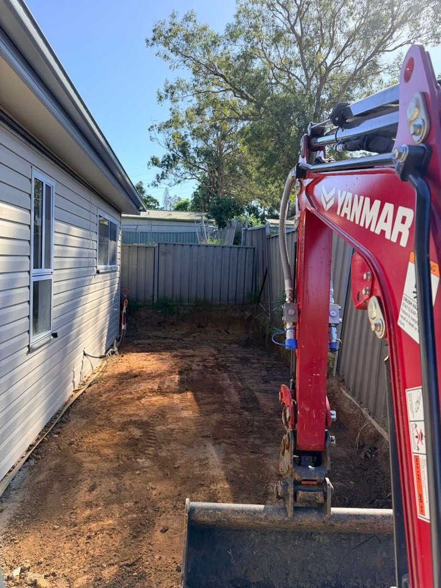
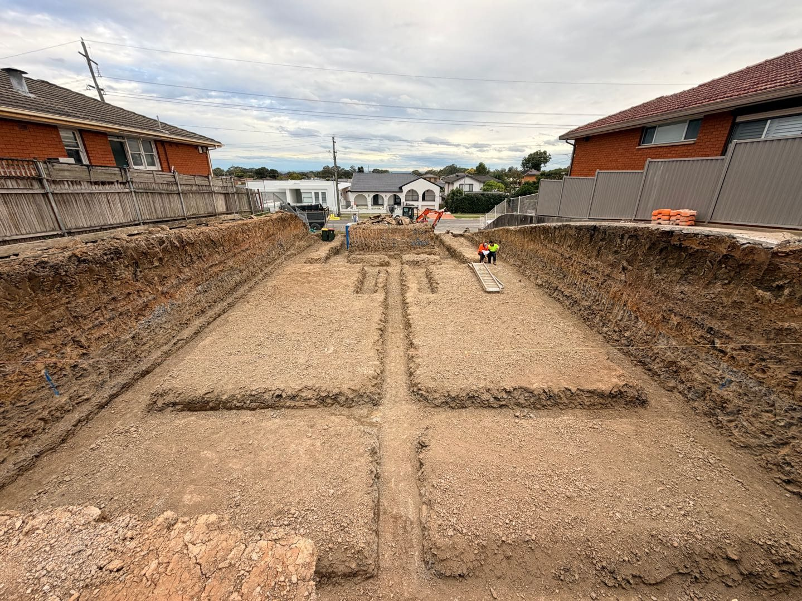
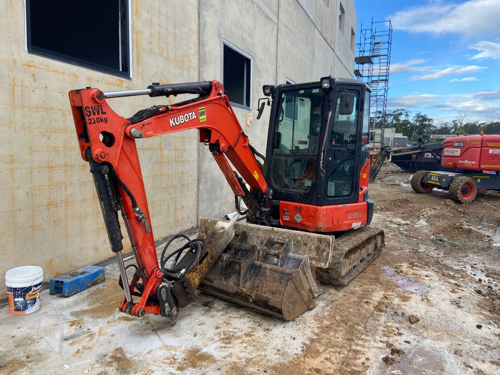
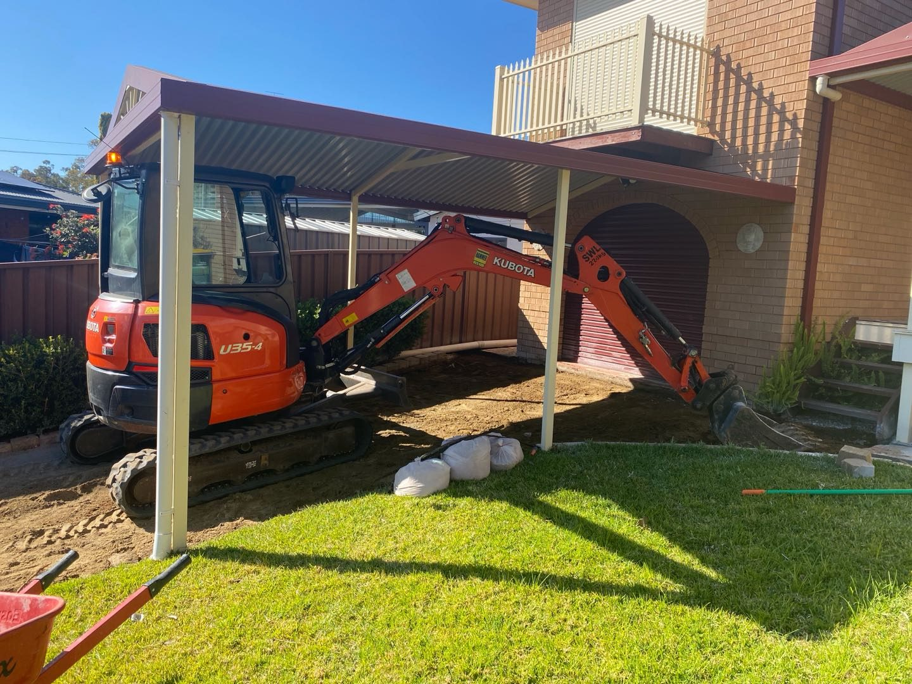

Services
Demolition and excavation services.
Everything below is listed on Patrick Hanna’s hipages profile. Call or email to talk about your job.
01 · Demolition
Demolition & strip-outs
Taking things down and taking things out, including bathrooms.

- 01
Bathroom strip-out
Taking out an existing bathroom’s fixtures and fittings so the space is ready for what comes next.
- 02
Strip outs
Removing fixtures, fittings and linings from inside a building.
- 03
Demolition without salvage rights
Demolition where the contractor does not take salvage rights. Ask Patrick how materials are handled on your job.
- 04
Demolition with salvage rights
Demolition with salvage rights. Ask Patrick how this works on your job.
- 05
Recycling focused demolition
Demolition with a focus on recycling.
02 · Excavation
Excavation & earth moving
From post holes to full site cuts, with a mini excavator when access is tight.

- 01
Site cuts
Cutting a site down to the level you need.
- 02
Trenching
Trenches dug for services, drainage and footings.
- 03
Pool excavations
Digging out the space for a pool.
- 04
Post hole digging
Holes dug for posts.
- 05
Earth moving
Shifting soil and spoil around and off your site.
- 06
Compacting
Compacting the ground after digging.
- 07
Boring and under road boring
Boring under obstacles, including under roads.
- 08
Horizontal directional drilling
Drilling horizontally to run lines without an open trench.
- 09
Pit installation
Excavation for pits that are being installed.
- 10
Confined space (mini excavator)
A mini excavator for tight access, such as narrow side passages and under cover.
On site
A look at the work.



Where we work
Suburbs served.
Listed on the hipages profile for demolition and excavation. Based in Shalvey NSW 2770.
- Colyton
- Plumpton
- Minchinbury
- North St Marys
- Oakhurst
- Colebee
- St Marys
- Mount Druitt
- Glendenning
Get in touch
Talk through your job.
Call or email Patrick Hanna to talk through your job.